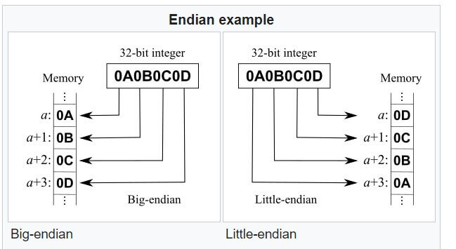

node.js 入门教程之八 -- os 模块
os 模块可以用来获取操作系统的底层信息和系统上运行的程序，以及和系统交互。
它集成在 node.js 中，只需要引入即可：
const os = require('os')
这里先介绍一些在处理文件时有用的 properties：
- os.EOL 会返回 line delimiter 行定界符，
\non Linux and macOS, and\r\non Windows - os.constants.signals 提供处理进程的信号常数，如：SIGHUP, SIGKILL
- os.constants.errno 提供报告 error 的相关常数，如：EADDRINUSE, EOVERFLOW
完整的 signals 信号列表参考：https://nodejs.org/api/os.html#os_signal_constants
下面介绍 os 模块常用的 method。
os.arch()
os.arch() 会返回底层架构的字符串，如：arm, x64, arm64：
console.log(os.arch())
//output:
x64os.cpus()
os.cpus() 会返回系统的 cpu 信息：
console.log(os.cpus())
//output:
[
{
model: 'Intel(R) Core(TM) i7-6500U CPU @ 2.50GHz',
speed: 2591,
times: {
user: 1871810,
nice: 17880,
sys: 1451160,
idle: 81134010,
irq: 0
}
},
{
model: 'Intel(R) Core(TM) i7-6500U CPU @ 2.50GHz',
speed: 2591,
times: {
user: 1838130,
nice: 12780,
sys: 1532060,
idle: 81234660,
irq: 0
}
}
]os.endianness()
根据 node.js 是通过 Big Endian 或 Little Endian 大尾数或小尾数编译的，os.endianness() 返回 BE 或 LE：
console.log(os.endianness())
//output:
LE关于 Big Endian 或 Little Endian 参考：https://en.wikipedia.org/wiki/Endianness

os.freemem()
os.freemem() 返回系统可用内存，以字节为单位：
console.log(os.freemem())
//output:
574537728os.homedir()
os.homedir() 返回系统当前用户的 home 目录路径：
console.log(os.homedir())
//output:
/home/marcoos.hostname()
os.hostname() 返回 hostname 信息：
console.log(os.hostname())
//output:
marco-virtual-machineos.loadavg()
os.loadavg() 返回系统计算的平均加载时间，此 method 只在 Linux/macOS 下有意义：
console.log(os.loadavg())
//output:
[ 0.08, 0.17, 0.13 ]os.networkInterfaces()
os.networkInterfaces() 返回系统的网卡信息：
console.log(os.networkInterfaces())
//output:
{ lo0:
[ { address: '127.0.0.1',
netmask: '255.0.0.0',
family: 'IPv4',
mac: 'fe:82:00:00:00:00',
internal: true },
{ address: '::1',
netmask: 'ffff:ffff:ffff:ffff:ffff:ffff:ffff:ffff',
family: 'IPv6',
mac: 'fe:82:00:00:00:00',
scopeid: 0,
internal: true },
{ address: 'fe80::1',
netmask: 'ffff:ffff:ffff:ffff::',
family: 'IPv6',
mac: 'fe:82:00:00:00:00',
scopeid: 1,
internal: true } ],
en1:
[ { address: 'fe82::9b:8282:d7e6:496e',
netmask: 'ffff:ffff:ffff:ffff::',
family: 'IPv6',
mac: '06:00:00:02:0e:00',
scopeid: 5,
internal: false },
{ address: '192.168.1.38',
netmask: '255.255.255.0',
family: 'IPv4',
mac: '06:00:00:02:0e:00',
internal: false } ],
utun0:
[ { address: 'fe80::2513:72bc:f405:61d0',
netmask: 'ffff:ffff:ffff:ffff::',
family: 'IPv6',
mac: 'fe:80:00:20:00:00',
scopeid: 8,
internal: false } ] }os.platform()
os.platform() 返回当前安装的 node.js 的编译平台，可能的返回值为：
- darwin
- freebsd
- linux
- openbsd
- win32
- ...more
os.release()
os.release() 返回当前系统的版本号信息：
console.log(os.release())
//output:
5.8.0-41-genericos.tmpdir()
os.tmpdir() 返回系统的临时文件夹路径：
console.log(os.tmpdir())
//output:
/tmpos.totalmem()
os.totalmem() 返回系统的总内存数量，单位为 byte 字节：
console.log(os.totalmem()/1024/1024)
//output:
1958.45703125os.type()
os.type() 返回当前操作系统类型，返回值可以有：
- Linux
- Darwin on macOS
- Windows_NT on Windows
os.uptime()
os.uptime() 返回系统从上次开机来已运行的总时间，单位为秒：
console.log(os.uptime()/3600)
//output:
24.260555555555555os.userInfo()
os.userInfo() 返回一个 object 包含当前的 username, uid, gid, shell, 和 homedir：
console.log(os.userInfo())
//output:
{
uid: 1000,
gid: 1000,
username: 'marco',
homedir: '/home/marco',
shell: '/bin/bash'
}以上就是 os 模块的简单使用方法。
标签：无